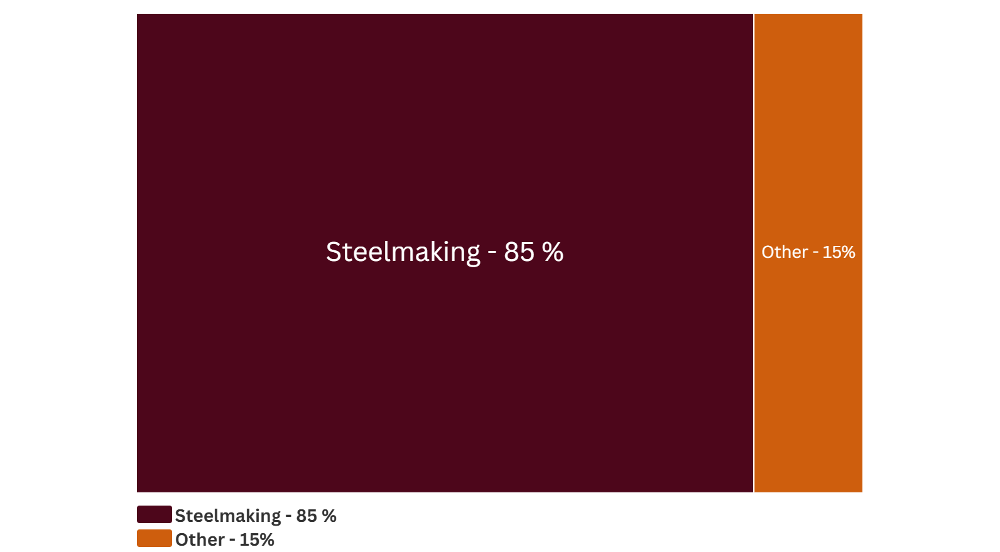
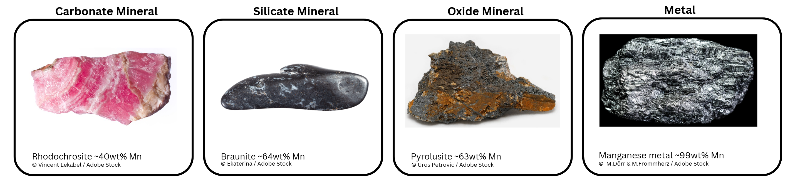

Manganese is a very hard, brittle transition metal. Manganese occurs as a trace element in several ore types: oxides, carbonates, hydroxides, and silicates. More concentrated manganese ores are hosted in ancient sea beds under intense pressure. 70% of manganese deposits have been identified to occur in South Africa. The most common occurrences of manganese-containing minerals include rhodochrosite, pyrolusite, and braunite. [1]
The manganese oxide, pyrolusite, has been used to make black pigments since the prehistoric period. The metallic form of manganese was first identified in Austria by Ignatius Kaim 1771. Three years later in Sweden, Johan Gottlieb Gahn heated the pyrolusite (a manganese dioxide) in the presence of carbon to yield manganese metal. Gahn demonstrated manganese metal could be obtained through carbothermal reduction. [2]
Between the 1930-40s, the Soviet Union was the largest exporter of manganese and had a reserve of ~ 815,000,000 MT. Concentrated manganese minerals exist in the Nikopol manganese deposit which spans Bulgaria, Georgia and Ukraine. Some of the largest manganese mines are in the Nikopol Manganese Basin in Dnipropetrovsk, Ukraine which began mining in 1886. In recent years, South Africa has lead manganese production, with reserves estimated at 560,000,000 MT. One of the largest South African manganese mines is the Mamatwan Mine, with annual production of 3 million MT. Another significant manganese mining area is in Gabon. Industrial mining in Gabon began in the 1880s. Gabon gained independence from the French in 1960. The US imports 63% of its manganese from Gabon (USGS). The company that oversees the largest mining industry in Gabon was founded after the 1880s in Gabon by the French. Presently, 22% of Gabon's land is used for mining minerals. [1-4]
Most manganese is mined in open pits. To start mining, topsoil and overburden, or the dirt that doesn't have the sought mineral deposit, is excavated to reveal the iron ore. The rock is exploded to release the ore. From here it is transported to separation facilities. As manganese ore often contains significant amounts of clay or sediment, the ore is washed to remove unwanted mud. The washed ore is sent to ball mills for wet milling. A hydrocyclone uses centrifugal force to separate out fine particles while the coarse material is returned for further processing. The milled slurry is dewatered in thickeners and dried in rotary dryers to form a powder or concentrate. This process can generate 1.2 – 7 MT of waste per a produced 1 MT of manganese concentrate. [5-7]
Most concentrate is exported to high temperature furnaces that smelt the material with coke at roughly 1,600 °C. This process is an intermediate step in the production of ferromanganese or silicomanganese alloys which are important for the steel industry.[5-7]
The process to recover more pure manganese (99.7-99.9 wt %) is a little different than producing manganese concentrate. Herein, the crushed manganese ore is leached with sulfuric acid to create a manganese sulfate solution. The manganese flakes are recovered from this solution via electrolysis. During this process, a direct current (DC) is passed through the solution, causing manganese ions in the solution to migrate toward and deposit onto stainless steel cathodes. After manganese has accrued over the course of several days, it is mechanically stripped. The manganese metal flakes are washed with water to remove any acid and heated to 500 °C to get rid of any residual impurities. These flakes are sold by mineral suppliers. [5-8]
What is manganese used for?

Figure 1: Industrial uses of manganese. Data source: USGS National Minerals Information Center, 2025.
What do some manganese minerals look like?

Figure 2: Different types of manganese containing materials.
Where are manganese mineral deposits?

Figure 3: Global manganese reserves as reported by the USGS. Data is from https://mrdata.usgs.gov/general/map-global.html
Who imports manganese?
Click on the blue bubbles to see where manganese is imported from.
Where is manganese mined?
Scroll with your mouse or touchpad over the tagged locations on the map to zoom in/out.